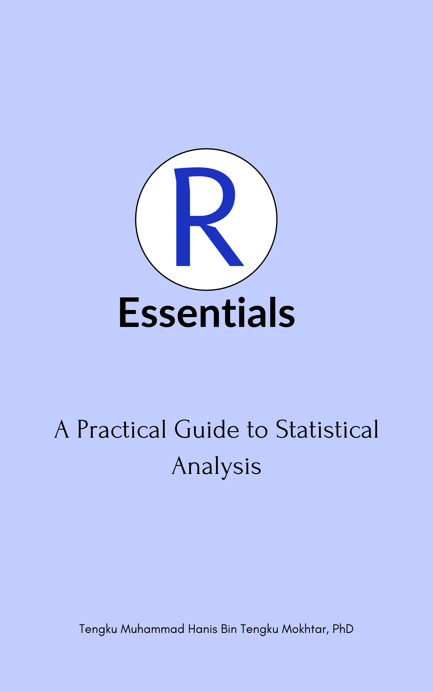

R Essentials: A Practical Guide to Statistical Analysis
Welcome

This book is currently in its drafting stages and has not yet been published. Most of the chapters are incomplete and still undergoing further refinement.
This book is the second instalment in the R Essentials series and serves as a continuation of R Essentials: A Beginner’s Guide to Data Analysis As such, this book will not revisit the introduction to R or RStudio, as these were covered comprehensively in the first book.
This book is intended for anyone who is new to applied statistical analysis and wishes to develop practical skills in analysing data using R. My hope is that it will serve as a practical starting point for those embarking on their journey into applied statistics. By combining statistical knowledge with the power of R, readers can explore a wide range of analytical possibilities at minimal cost, as R is an open-source programming language and is freely available to everyone.
Throughout this book, I have tried to explain each topic in a straightforward and accessible manner while maintaining sufficient depth to provide a solid understanding. Although some of the topics introduced may seem less significant from a practical standpoint, I believe they form an essential foundation for anyone venturing into the world of data analysis and applied statistics. Understanding these fundamentals will help readers build the knowledge and confidence needed to tackle more complex analytical challenges in the future.
“There is none amongst the Muslims who plants a tree or sows seeds, and then a bird, or a person or an animal eats from it, but is regarded as a charitable gift for him.”
— Sahih al-Bukhari
I sincerely hope that my efforts in writing this book will be regarded as a form of sadaqah jariyah (ongoing charity) — like planting a tree or sowing a seed whose benefits continue to grow and reach others long after it has been planted.
Finally, I would like to express my deepest love and gratitude to my late wife, Nurul Asmaq. Though you are no longer by my side, you will forever remain in my heart and in my thoughts. Al-Fatihah.
To my son, Hanif, who gives me purpose, and to my parents, Tengku Mokhtar and Nor Malaysia, thank you for your love, patience, and unwavering support. Writing this book has inevitably meant taking time away from all of you. Even if my fascination with R and data analysis may sometimes be difficult to understand, your understanding and support have meant more to me than words can express.